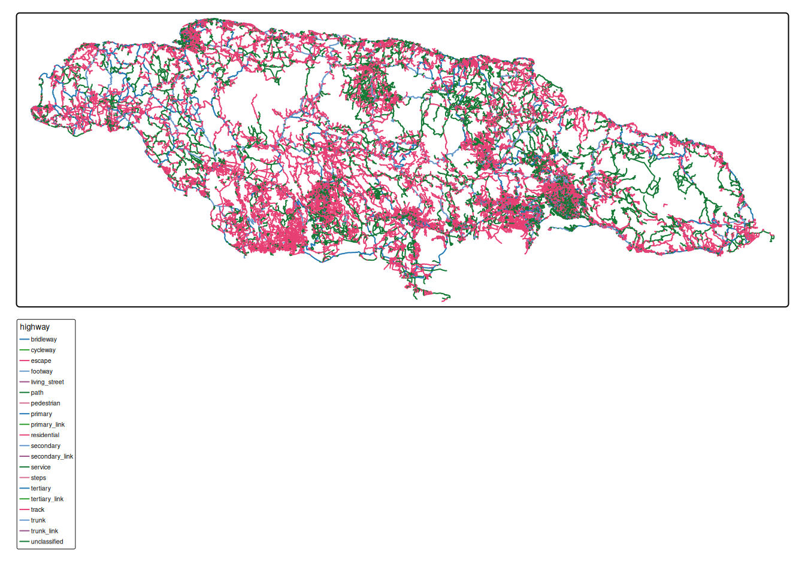

Homework to present at the next session: Ensure you have completed the second homework, described at the end of itsleeds.github.io/tds/p2 by Thursday 13th February.
Seminar 1 - Mini-workshop
The best way to learn is by exploring data and answering your own questions. Here are some datasets that can help you investigate questions like:
What is the Average Daily People/Bikes/Passengers/Cars?
What is the typical daily/weekly/monthly demand profile?
Where are the points with the highest demand/flows?
0.1 Some interesting datasets …
Let’s explore some interesting datasets. First we will install (if necessary) and load the packages for this examples
Skipping install of 'sf' from a cran remote, the SHA1 (1.0-19) has not changed since last install.
Use `force = TRUE` to force installation
Skipping install of 'tidyverse' from a cran remote, the SHA1 (2.0.0) has not changed since last install.
Use `force = TRUE` to force installation
Skipping install of 'osmextract' from a cran remote, the SHA1 (0.5.2) has not changed since last install.
Use `force = TRUE` to force installation
Skipping install of 'tmap' from a cran remote, the SHA1 (4.0) has not changed since last install.
Use `force = TRUE` to force installation
Installing 1 packages: maptiles
Installing package into '/home/runner/work/_temp/Library'
(as 'lib' is unspecified)
also installing the dependency 'slippymath'
sapply(pkgs, require, character.only =TRUE)
Loading required package: sf
Linking to GEOS 3.12.1, GDAL 3.8.4, PROJ 9.4.0; sf_use_s2() is TRUE
Loading required package: tidyverse
── Attaching core tidyverse packages ──────────────────────── tidyverse 2.0.0 ──
✔ dplyr 1.1.4 ✔ readr 2.1.5
✔ forcats 1.0.0 ✔ stringr 1.5.1
✔ ggplot2 3.5.1 ✔ tibble 3.2.1
✔ lubridate 1.9.4 ✔ tidyr 1.3.1
✔ purrr 1.0.4
── Conflicts ────────────────────────────────────────── tidyverse_conflicts() ──
✖ dplyr::filter() masks stats::filter()
✖ dplyr::lag() masks stats::lag()
ℹ Use the conflicted package (<http://conflicted.r-lib.org/>) to force all conflicts to become errors
Loading required package: osmextract
Data (c) OpenStreetMap contributors, ODbL 1.0. https://www.openstreetmap.org/copyright.
Check the package website, https://docs.ropensci.org/osmextract/, for more details.
Loading required package: tmap
Loading required package: maptiles
sf tidyverse osmextract tmap maptiles
TRUE TRUE TRUE TRUE TRUE
0.1.1 Motorised vehicles counts: Leeds
Many cities/countries publish data from permanent traffic counters e.g. ANPR cameras, induction loops or low-cost sensors. We are going to use data from the sensors in Leeds (available in Data Mill North)
Rows: 29 Columns: 7
── Column specification ────────────────────────────────────────────────────────
Delimiter: ","
chr (3): Site Name, Description, Orientation
dbl (4): Site ID, Grid, X, Y
ℹ Use `spec()` to retrieve the full column specification for this data.
ℹ Specify the column types or set `show_col_types = FALSE` to quiet this message.
Rows: 583499 Columns: 9
── Column specification ────────────────────────────────────────────────────────
Delimiter: ","
chr (5): Sdate, Cosit, LaneDescription, DirectionDescription, Flag Text
dbl (4): Period, LaneNumber, LaneDirection, Volume
ℹ Use `spec()` to retrieve the full column specification for this data.
ℹ Specify the column types or set `show_col_types = FALSE` to quiet this message.
If you are interested in open traffic count datasets see this
0.1.2 Cycle counts for West Yorkshire
Some cities would have some dedicated infrastructure to count the number of people using bikes at strategic points of the city. We are going to use some cycle counters from West Yorkshire that you can find here:
Rows: 42 Columns: 7
── Column specification ────────────────────────────────────────────────────────
Delimiter: ","
chr (4): Site ID, Site Name, Description, Orientation
dbl (3): Grid, Latitude, Longitude
ℹ Use `spec()` to retrieve the full column specification for this data.
ℹ Specify the column types or set `show_col_types = FALSE` to quiet this message.
Rows: 555545 Columns: 9
── Column specification ────────────────────────────────────────────────────────
Delimiter: ","
chr (5): Sdate, Cosit, LaneDescription, DirectionDescription, Flag Text
dbl (4): Period, LaneNumber, LaneDirection, Volume
ℹ Use `spec()` to retrieve the full column specification for this data.
ℹ Specify the column types or set `show_col_types = FALSE` to quiet this message.
Rows: 62495 Columns: 9
── Column specification ────────────────────────────────────────────────────────
Delimiter: ","
chr (2): Sensor_Name, Location
dbl (6): ID, Location_ID, HourDay, Direction_1, Direction_2, Total_of_Direc...
date (1): Sensing_Date
ℹ Use `spec()` to retrieve the full column specification for this data.
ℹ Specify the column types or set `show_col_types = FALSE` to quiet this message.
0.1.4 Public transport tap-in data: Bogotá
Public transport ridership data can be difficult to obtain. Fortunately, some cities which have systems managed by a public organisation make this data available for the public. Bogotá’s integrated transport system publishes the tap-in data for the BRT system (see this). We will use one of the daily reports.
Rows: 1628608 Columns: 7
── Column specification ────────────────────────────────────────────────────────
Delimiter: ","
chr (2): Estacion_Parada, Sistema
dbl (4): latitud, longitud, hora, validaciones
date (1): fecha
ℹ Use `spec()` to retrieve the full column specification for this data.
ℹ Specify the column types or set `show_col_types = FALSE` to quiet this message.
TfL’s crowding data is also a great source of ridership data. See this.
0.1.5 Network data from OSM
You may be already familiar with getting and using OSM data. This an example of how to obtain the network that can be used for pedestrians.
Finished the vectortranslate operations on the input file!
Reading layer `lines' from data source
`/tmp/Rtmpucefpc/geofabrik_jamaica-latest.gpkg' using driver `GPKG'
Simple feature collection with 57521 features and 13 fields
Geometry type: LINESTRING
Dimension: XY
Bounding box: xmin: -78.36812 ymin: 17.73295 xmax: -76.18312 ymax: 18.52534
Geodetic CRS: WGS 84
tm_shape(my_network)+tm_lines("highway")
[plot mode] fit legend/component: Some legend items or map compoments do not
fit well, and are therefore rescaled.
ℹ Set the tmap option `component.autoscale = FALSE` to disable rescaling.

Note: you can access a simplified network dataset from Ordnance Survey’s OpenRoads dataset.